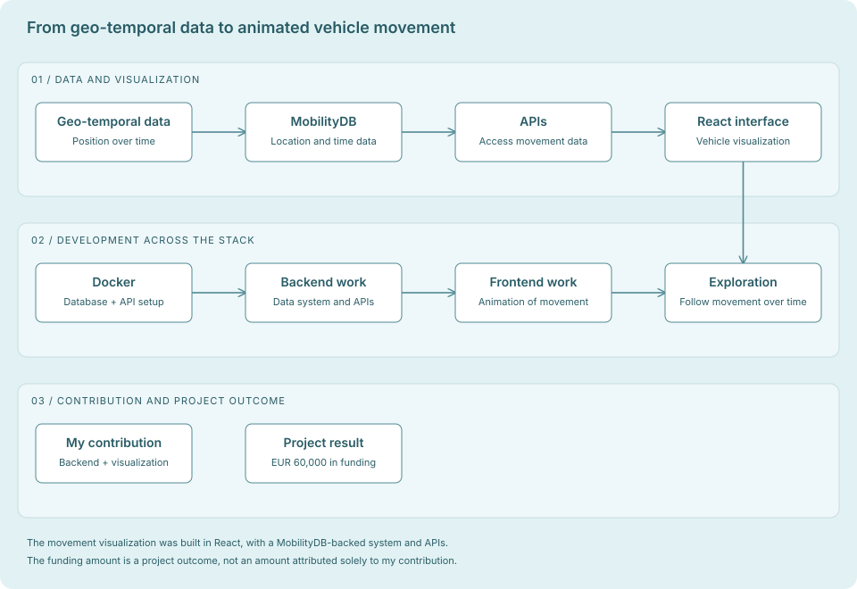

The project
At Decision Labs, I worked on a system for geo-temporal data: information about where something was and how its position changed over time. The interface showed vehicle movement as an animation.
Building the data layer
I built a MobilityDB-backed system for the geo-temporal data and worked on Dockerized databases and APIs. That provided the data side of the project alongside the visual interface.
Showing movement in React
I developed the React interface that visualized vehicle movements over time. The animation made the data easier to follow than looking at positions as separate records.
Connecting backend and interface
My work covered both the system holding the movement data and the interface presenting it. That meant thinking about how the data would be used while building the APIs and the visualization.
The result
The project secured EUR 60,000 in funding. My contributions were the MobilityDB-backed system, Dockerized databases and APIs, and the React vehicle-movement visualization.
What I took from it
This was an early opportunity to work across a specialized data system and a visual product. It helped me understand why the shape of the data and the way people explore it need to be considered together.